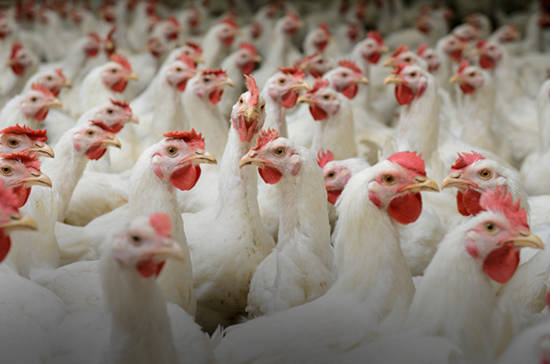
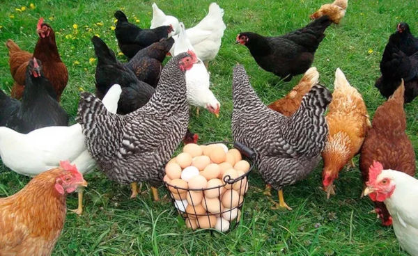

O que é Avicultura?
É a área da zootecnia que trabalha com a criação de galos e galinhas, pode ser feita em sistema intensivo ou extensivo, mas por conta da alta demanda é comum em sistema intensivo para poder engordar o animal o máximo possível em um curto período de tempo, também por serem animais bastante sensíveis a mudanças de temperaturas, com o avanço da tecnologia e genética a idade de abate desse animal pode chegar em 39 dias atualmente. O Brasil é um grande produtor de carne de frango atualmente, chegando a ser o país que mais exporta este tipo de carne.
O que o zootécnico faz nesta área?
- Maneja os animais
- Planeja, realiza, e conduz pesquisas
- Formular rações para os animais
- Detectar problemas comportamentais nos animais
- Adaptar animais ao clima
- Cria estruturas para comportar os animais
- Utiliza equipamentos para criação dos animais
- Busca trazer bem estar aos animais
Sub áreas
A Avicultura possui duas áreas, a avicultura de corte e de postura, onde vão lidar com produtos diferentes.
Avicultura de corte
É a área que trabalha com a criação de aves com uma genética aprimorada para que consigam chegar em um peso consideravelmente alto, cerca de 3 quilos em média, com uma boa estrutura com uma quantidade de gordura menor, são feitos em sistema intensivo, onde o animal come o dia inteiro e ganha peso.
Avicultura de postura
Esta é a área que deixa as galinhas em uma estrutura fechada para colocarem ovos diariamente, onde posteriormente é feita a coleta destes ovos, levando os que serão inseminados por um macho com boa genética para reprodução em outro local, e deixando os restantes para serem comercializados.
Galinha Caipira
As galinhas caipiras funcionam do mesmo jeito, sem muita diferença, a única coisa que muda o sistema, pois elas são criadas em sistema extensivo ou semi intensivo, e isso faz a mudança da cor dos ovos dos animais.
